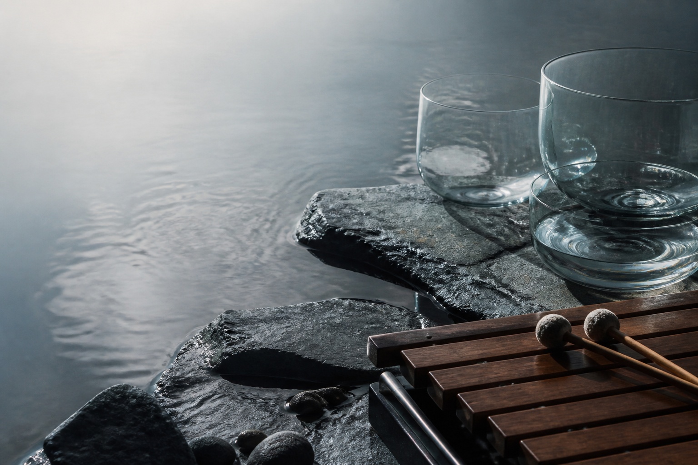

Glass Field Study
A close-mic performance built from tuned bowls, surface tension, and soft contact.

Xylophone / Objects / Sound Practice
Music for xylophone, water, stone, glass, and the quiet physics of touch.
Stone, glass, water, and struck wood
Sound objects arranged like small landscapes
Xylophone studies, field textures, and decay
Helena Tan Li is a xylophonist, percussionist, and interdisciplinary artist working with contemporary repertoire, found materials, and performance as a sculptural practice.
Her work moves between concert music, sound installation, and intimate studies of resonance: stones, water, glass bowls, wood bars, mallets, microphones, and the room itself.
A close-mic performance built from tuned bowls, surface tension, and soft contact.
Dry wooden attacks bloom into delayed harmonics, water noise, and low electronic shadow.
A compact live set for rocks, bowls, xylophone fragments, contact microphones, and moving air.
Seattle, WA / Gallery performance
Portland, OR / Lincoln Recital Hall
San Francisco, CA / Conservatory Studio
"The work feels less like a recital than a landscape being quietly activated."
Replace with publication or presenter quoteBased in Seattle / available for concerts, gallery performances, festivals, commissions, and residencies.